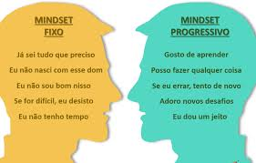
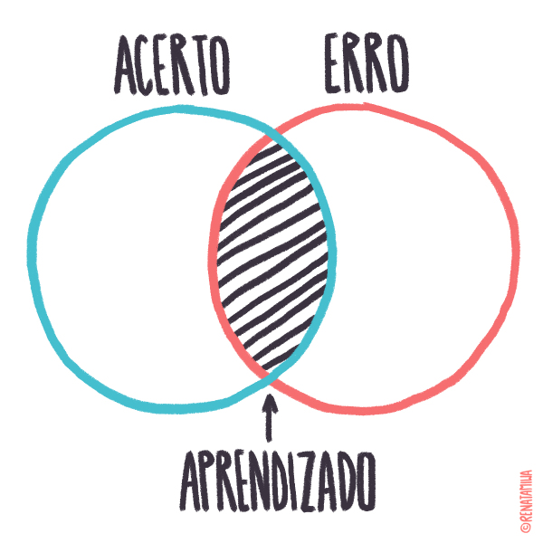

Ao final da aula, quero que meus alunos consigam entender um pouco mais sobre mentalidade de crescimento
A mentalidade de crescimento é o pensamento de que nosso cérebro e habilidades não são fixos e podem melhorar com a prática certa.
A mentalidade de crescimento ajuda a nos concentrarmos no processo de aprendizagem e prática.
Mesmo se não atingirmos a meta final, ainda seremos vencedores, porque é o processo que faz o cérebro crescer.
A mentalidade de crescimento pode ser benéfica de modo que nos propicia evoluir o nosso cérebro para que possamos crescer mentalmente e poder amadurecer.
Tomar uma decisão errada faz parte da vida, tanto no trabalho como na vida pessoal. Mas todo mundo merece uma segunda chance, concorda? Até porque ninguém nasceu sabendo, principalmente quando se está começando um novo trabalho ou uma nova carreira. Errar faz parte do processo de aprender e empreender.